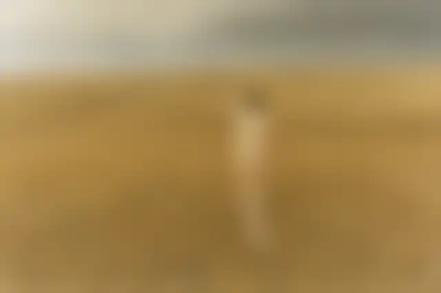
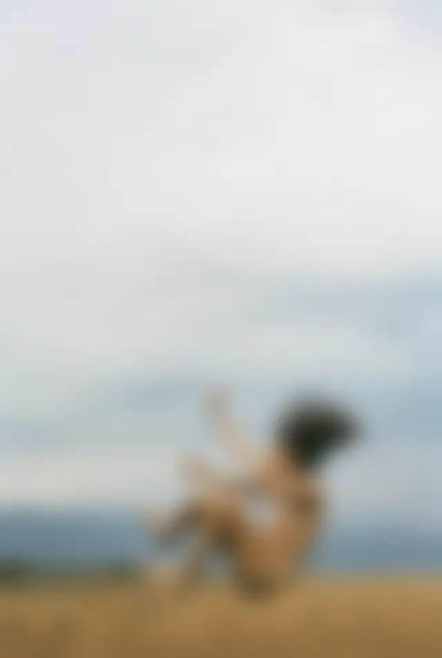
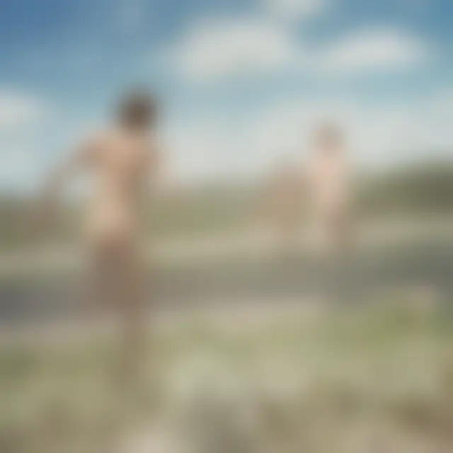
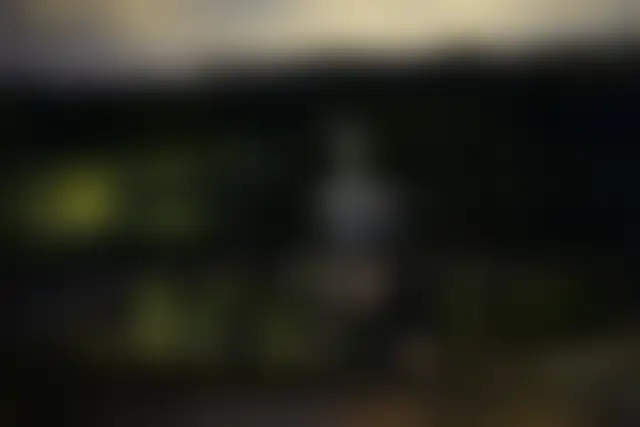
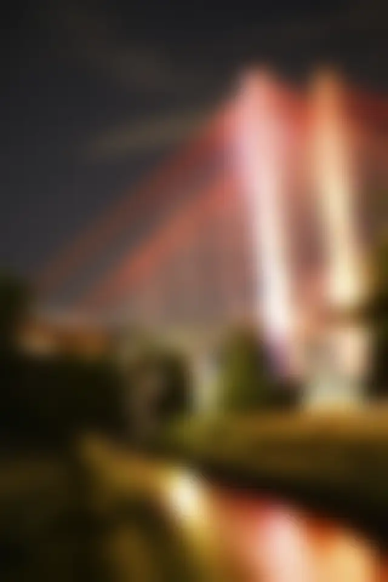

맨몸으로 들판을 달리는 사람들, 공중으로 뛰어오른 채 멈춘 친구들. 2000년대 중반 이후 '청춘'을 찍은 사진을 떠올리면 라이언 맥긴리(Ryan McGinley)의 장면이 먼저 겹친다. 그가 올여름 뉴욕에서 연 개인전 「Night Shift」는 그 낮의 사진과 거리가 멀다. 밤 9시부터 새벽 5시 사이, 뉴욕의 다섯 개 자치구를 찍었다.
뉴저지의 막내
맥긴리는 1977년 10월 17일 뉴저지주 램지에서 여덟 남매의 막내로 태어났다. 파슨스 디자인 스쿨에서 그래픽 디자인과 회화, 시를 공부했고 2000년에 졸업했다. 사진은 1998년 무렵부터 찍었다. 처음 카메라를 향한 곳은 뉴욕에서 함께 어울리던 친구들이었다.
테이프로 붙인 포트폴리오, 스물다섯의 휘트니
이름이 알려지기 전, 그는 사진집을 직접 만들었다. 제목은 밴드 더 후의 영화에서 따온 「The Kids Are Alright」. 잉크젯으로 뽑은 사진을 양면테이프로 붙여 엮은 손수 만든 책이었다. 졸업을 앞둔 무렵 소호의 빈 공간(420 West Broadway)에서 첫 전시를 열어 그 책을 팔았고, 남은 책은 갤러리와 잡지사, 그리고 그가 좋아하던 작가들에게 직접 보냈다.
그 가운데 한 권이 휘트니 미술관의 사진 큐레이터 실비아 울프에게 닿았다. 울프는 그 책을 보고 전시를 꾸렸다. 2003년 2월 1일부터 5월 18일까지 열린 같은 이름의 개인전 「The Kids Are Alright」다. 그때 그는 스물다섯이었고, 휘트니에서 개인전을 연 가장 젊은 작가 가운데 한 명이 됐다. 같은 해 『아메리칸 포토』는 그를 올해의 사진가로 뽑았고, 2007년에는 국제사진센터(ICP)가 올해의 젊은 사진가상을 줬다.
주머니 속의 야시카 T4
그 시절 사진은 대부분 야시카 T4 로 찍었다. 칼 자이스 렌즈를 단 35mm 자동 똑딱이 카메라다. 그가 이 카메라를 알게 된 건 스케이트보드 잡지 『Big Brother』에서였다. 그는 이 잡지를 당시 자기의 바이블이었다고 했고, 거기 실린 사진가 얼 파커의 글이 T4 를 추켜세우는 걸 보고 한 대를 샀다.
T4 를 고른 가장 큰 이유는 크기였다. 주머니에 들어갔다. 1999년부터 2003년까지 그는 거의 매일 밤 밖에 나갔고, 주머니에 필름 열 롤을 넣고 다니며 눈앞의 일을 찍었다. 바에서는 ISO 1600 필름과 형광등 불빛만으로 찍었고, 셀프타이머로 자기 자신도 찍었다. 생활 방수가 돼서 물이 튀는 자리에서도 꺼낼 수 있었다. 그는 그때 사진을 대부분 기록에 가깝다고 말한다. 장면을 꾸미기보다 벽에 붙은 파리처럼 지켜봤다는 것이다.
이 카메라는 그 뒤로도 그의 가방에 남았다. 2012년 사진집을 낼 때 쓴 카메라로 그는 라이카 R8, 캐논 5D 와 함께 야시카 T4 를 꼽았다. 이 카메라가 어떤 카메라인지는 「야시카 T4, 주머니에 들어가는 칼 자이스」에 따로 정리했다.
여름마다 떠난 석 달
맥긴리 하면 로드트립이 따라온다. 2005년, 마이크 밀스 감독의 영화 촬영장을 다녀온 뒤 그는 직접 촬영 여행을 꾸렸다. 열 명 남짓한 친구와 모델을 태우고 석 달 동안 미국을 가로질렀다. 이후 여름마다 같은 여행을 떠났다. 1월부터 계획을 세웠고, 먼저 찍고 싶은 장면 하나를 정한 다음 그 장면에 맞춰 길을 짰다.
로드트립부터는 찍는 방식이 달라졌다. 정해 둔 장면 위에 모델의 움직임과 그날의 우연을 얹었다. 그래서 사진 속 몸은 늘 움직이는 도중에 있다.
2024년에 나온 『Yearbook』(Rizzoli)은 결이 조금 다르다. 친구와 동료들을 스튜디오에서 찍은 누드 초상 10년 치를 묶었다. 장난스러우면서도 감정이 그대로 드러나는 얼굴들이다.
『바람을 부르는 휘파람』과 시규어 로스
로드트립 시절의 사진을 한 권으로 모은 책이 2012년 리졸리에서 나온 『Whistle for the Wind』다. 그의 작업을 처음으로 크게 정리한 240쪽짜리 작품집으로, 작가 크리스 크라우스와 비평가 존 켈시, 영화감독 구스 반 산트가 글을 보탰다. 여름마다 친구들과 길 위에서 보낸 날들, 들판과 호수를 맨몸으로 뛰어다니는 이십 대들이 이 책에 담겼다.

누드가 포함된 사진입니다. 원하시는 분만 눌러 주세요.

누드가 포함된 사진입니다. 원하시는 분만 눌러 주세요.
한국에서 맥긴리가 널리 알려진 것도 이 시기의 사진 덕분이다. 대림미술관은 2013년 11월부터 이듬해 2월까지 국내 첫 개인전 「청춘, 그 찬란한 기록」을 열었다. 초기 뉴욕 시절 사진부터 로드트립 연작, 동물과 함께 찍은 연작, 스튜디오 흑백 초상까지 걸렸다. 일부 작품의 노출 때문에 미성년자는 보호자와 함께해야 관람할 수 있었다. 2016년에는 『Whistle for the Wind』가 『라이언 맥긴리 컬렉션: 바람을 부르는 휘파람』이라는 제목으로 윌북에서 번역돼 나왔다.
그의 사진을 미술관 밖에서 먼저 본 사람도 많다. 아이슬란드 밴드 시규어 로스가 2008년에 낸 앨범 「Með suð í eyrum við spilum endalaust」의 표지가 맥긴리의 사진이다. 젊은이들이 맨몸으로 길을 건너 달려가는 뒷모습이다. 그의 전시 「I Know Where the Summer Goes」를 알리는 전단 사진이 마침 앨범의 이미지를 고민하던 보컬 욘시에게 닿았다고 한다. 맥긴리는 그보다 몇 해 앞서 욘시의 사진을 찍으며 밴드와 인연을 맺었다.

누드가 포함된 사진입니다. 원하시는 분만 눌러 주세요.
「Night Shift」, 밤의 뉴욕
「Night Shift」는 6월 13일부터 8월 8일까지 뉴욕 소호의 제프리 다이치 갤러리(Jeffrey Deitch, 18 Wooster Street)에서 열렸다. 그가 뉴욕에서 연 개인전으로는 거의 십 년 만이다. 사진은 2025년 한 해 동안 밤 9시부터 새벽 5시 사이에 찍었다. 촬영은 거리가 가장 조용한 일요일과 월요일, 화요일 밤에 했다.
방법도 바꿨다. 셔터를 느리게 두고, 망원 렌즈를 쓰고, 무선 플래시로 사람에게만 빛을 터뜨렸다. 그는 모델에게서 한두 블록 떨어진 곳에 서서 전화나 무전기로 움직임을 지시했다. 플래시를 받은 몸은 또렷하게 남고, 그 뒤의 도시는 긴 노출 속에서 빛의 선이 된다. 몸과 도시가 한 화면에서 섞인다.

누드가 포함된 사진입니다. 원하시는 분만 눌러 주세요.

누드가 포함된 사진입니다. 원하시는 분만 눌러 주세요.
찍은 곳은 뉴욕 사람이라면 아는 장소들이다. 브루클린과 퀸스를 잇는 K 브리지, 포트 그린 공원, 링컨 센터, 센트럴파크 베데스다 분수의 천사상, 그리고 코니아일랜드의 롤러코스터 사이클론. 낮이면 사람으로 가득한 자리가 한밤에는 한 사람의 몸과 빛만 남은 무대가 된다.
누드가 포함된 사진입니다. 원하시는 분만 눌러 주세요.
낮의 들판을 달리던 친구들의 사진과 한밤의 뉴욕은 얼마나 다를까? 둘 다 몸이 움직이는 순간을 붙잡는다는 점은 같다. 다만 이번에는 그 무대가 그가 오래 살아 온 도시다. 이십 년 넘게 청춘을 찍어 온 사진가가 이제는 자기가 사는 도시를 다시 보고 있다.
정보
- 작가 라이언 맥긴리(Ryan McGinley), 1977년 미국 뉴저지주 램지 출생, 뉴욕 거주
- 전시 「Ryan McGinley: Night Shift」, 2026년 6월 13일 ~ 8월 8일, 제프리 다이치 갤러리 뉴욕
- 주요 이력 자가출판 사진집 「The Kids Are Alright」(1999~2000), 휘트니 미술관 개인전 「The Kids Are Alright」(2003), 사진집 『Whistle for the Wind』(Rizzoli, 2012, 국내판 『바람을 부르는 휘파람』 2016), 대림미술관 「청춘, 그 찬란한 기록」(2013~2014), 사진집 『Yearbook』(Rizzoli, 2024)
전시 소개는 제프리 다이치 갤러리 전시 페이지에서 볼 수 있다. 갤러리는 전시에 맞춰 도록도 냈다.